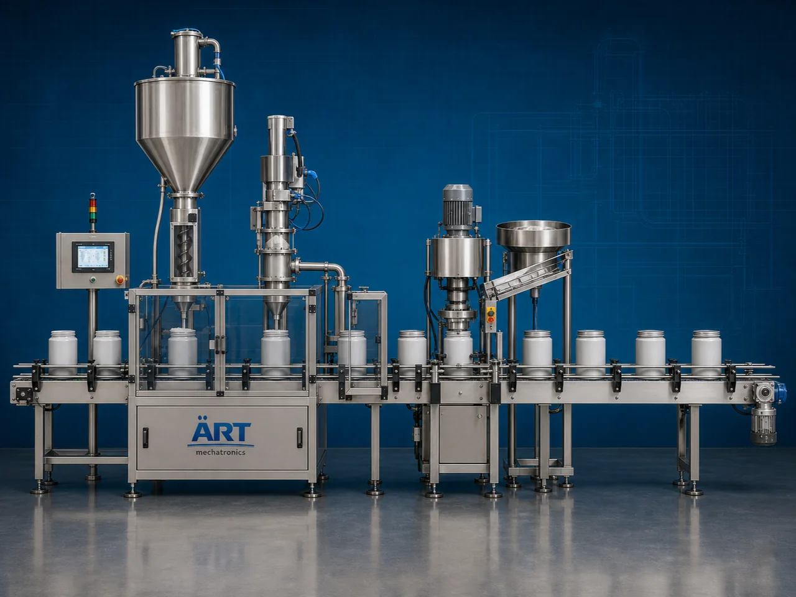

Cannister Packaging Machine (Automatic Canister Filling & Sealing System)
A Cannister Packaging Machine, also known as a Canister Filling Machine, Container Packaging Machine, Powder Canister Filling System, or Automatic Canister Packaging Line, is an advanced industrial packaging solution designed for automatic canister feeding, product dosing, filling, weighing, sealing, capping, coding, labeling, and high-speed packaging operations for powders, granules, snacks, tea, coffee, protein powder, dry fruits, confectionery products, nutraceuticals, and FMCG products.

About the Cannister Packing
Canister packaging systems are widely used for:
- Protein powder canister filling
- Coffee canister packaging
- Tea canister filling
- Snack canister packaging
- Dry fruit container packaging
- Nutraceutical powder filling
- Confectionery canister packaging
- Premium retail packaging operations
The machine improves:
- Filling accuracy
- Product hygiene
- Moisture protection
- Shelf life preservation
- Packaging consistency
- Production efficiency
- Premium retail presentation
Industrial canister packaging machines use:
- Automatic canister feeding systems
- Servo synchronized filling systems
- PLC and HMI automation controls
- Precision weighing and dosing mechanisms
- Sealing and capping systems
to automatically fill and package canisters with superior packaging quality and high production efficiency.
Canister packaging machines are widely used in industries such as:
Food processing industries Coffee industries Tea industries Nutraceutical industries Snack food industries Confectionery industries Pharmaceutical industries FMCG industries
where hygienic packaging, airtight sealing, and premium retail presentation are essential.
The machine is highly suitable for:
- Protein powder packaging
- Coffee canister filling
- Tea powder packaging
- Snack canister packaging
- Nutraceutical container filling
- Premium retail packaging
ART Mechatronics offers high-performance canister packaging machines, engineered for continuous industrial operation, accurate product filling, hygienic packaging quality, and reliable long-term packaging automation.
Working Principle of Cannister Packaging Machine
- 1. Empty Canister Feeding Empty canisters are automatically fed into packaging line through synchronized conveyor systems.
- 2. Product Dosing & Filling Process Machine automatically weighs and fills products into canisters using precision dosing systems.
Servo synchronization ensures accurate filling and smooth product handling.
- 3. Canister Filling Operation Machine handles: ✔ Protein powders ✔ Coffee powder ✔ Tea powder ✔ Snacks ✔ Dry fruits ✔ Nutraceutical products ✔ Confectionery items
accurately and continuously.
- 4. Sealing & Capping Process Machine performs: Cap placement Lid sealing Induction sealing Vacuum sealing (optional) Nitrogen flushing (optional)
for hygienic and airtight packaging quality.
- 5. Labeling & Inspection Integration Optional systems include: Wraparound labeling Batch coding Date printing QR code printing Check weighing systems
- 6. Finished Canister Discharge Finished containers discharged automatically for: Cartoning Case packing Retail distribution Export shipment handling
Types of Cannister Packaging Machines
- 1. Powder Canister Filling Machine Designed for: ✔ Powder and nutraceutical packaging applications
- 2. Coffee & Tea Canister Packaging Machine Suitable for: ✔ Beverage ingredient packaging systems
- 3. Snack Canister Packaging Machine Uses: ✔ Snack food and confectionery packaging systems
- 4. Multi Head Canister Filling Machine Designed for: ✔ High-speed industrial packaging systems
- 5. Servo Driven Canister Packaging Machine Suitable for: ✔ Precision high-accuracy filling operations
- 6. Fully Automatic Canister Packaging System Designed for: ✔ Complete industrial packaging automation lines
Industries Using Cannister Packaging Machines
💪 Nutraceutical Industry Protein powder, supplements, and health nutrition packaging systems. ☕ Tea & Coffee Industry Coffee powder, tea powder, and beverage ingredient packaging systems. 🍿 Snack Food Industry Snacks, namkeen, popcorn, cereals, and dry snack packaging systems. 🍬 Confectionery Industry Candy, chocolates, sweets, and premium confectionery packaging systems. 🥜 Dry Fruit Industry Dry fruits, nuts, seeds, and premium food container packaging systems. 🛒 FMCG Industry Consumer product and premium retail canister packaging systems.
Features & Advantages
- High-speed automatic canister filling and packaging operation
- Accurate weighing and synchronized filling systems
- Hygienic and airtight packaging quality
- PLC and servo automation control systems
- Improves product freshness and shelf life
- Reduces packaging wastage and labor dependency
- Supports multiple canister sizes and product formats
- Reliable long-term industrial performance
- Smooth and continuous packaging operation
Technical Highlights
Machine Type: Automatic canister packaging machine Industrial canister filling system Container packaging machine Packaging Material: Plastic canisters PET containers Composite canisters Food-grade containers Filling Integration: Servo dosing systems Load cell weighing systems Volumetric filling systems Auger filling systems Features: PLC control system Servo synchronization Touchscreen HMI Automatic capping systems Labeling integration Applications: Protein powders Coffee powder Tea powder Snacks Dry fruits Nutraceutical products Automation: Semi-automatic Fully automatic industrial systems
Turnkey Cannister Packaging Solutions
ART Mechatronics offers: Complete canister packaging systems Automatic filling and sealing solutions Packaging automation integration systems Conveyor synchronization systems Installation & commissioning After-sales service & AMC
Why Choose Art Mechatronics
Expertise in industrial packaging and automation systems Customized canister packaging solutions for multiple industries High-performance and hygienic packaging technology Advanced PLC and servo automation systems Proven industrial packaging performance across sectors
Applications
Protein Supplement Industries Tea & Coffee Packaging Plants Snack Food Manufacturing Facilities Confectionery Industries Dry Fruit Packaging Units FMCG Packaging Plants
Get pricing & specs for the Cannister Packing
Share the product, target capacity, current process and plant location. These details help our engineers discuss the right machine or line configuration.
One partner, from design to start-up
ART Mechatronics designs, manufactures, installs and commissions your Cannister Packing solution with regional presence in India, UAE and Thailand.